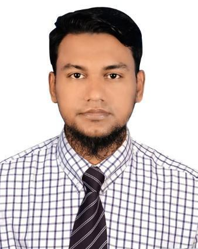

SAMIM MIA
System & Network Support Department
Diploma in Computer
R-02/H-02, Duaripara, Rupnagar-1216
Contact : +8801751-112131, +8801581-663037
E-mail : samimmia2131@gmail.com
LinkedIn: https://www.linkedin.com/in/samim-mia-b89181208
GitHub link: https://samim2131.github.io/Web-Resume/

CAREER OBJECTIVE:
To work in a responsible position within the System and Network & Hardware Support department where I can utilize my skills, dedication, and willingness to learn to contribute to the organization’s growth while enhancing my professional abilities.
PROFESSIONAL SUMMARY:
Network & Hardware Engineer with over 6+ years of experience across Data Center operations, system administration, and field IT support. Demonstrated expertise in managing critical infrastructure, automating cooling systems via PLC, configuring MikroTik/Cisco devices, and delivering PAC 1–2 technical support. Proven track record in supporting government ICT projects (CAAB) with 4 years of experience and ensuring high network uptime and rapid ticket resolution.
CORE COMPETENCIES:
- Networking & Infrastructure: OSI Model, TCP/IP, IPv4 Subnetting, VLSM, Static/OSPF Routing, Fiber Optics (Splicing, OTDR, ODF Setup), Team Management, Cable Management & Rack Setup.
- Systems & Cloud: Windows Server (2022), Windows 10/11, Ubuntu 24 LTS, Active Directory Domain Join, VMware Workstation, Azure Virtual Machines.
- Network Devices & Protocols: MikroTik, Cisco, Juniper, Routers/Switches, Wireless APs, DHCP, NAT/DNAT, DNS, FTP, SSH, Telnet, SMTP.
- Operations & Hardware: Data Center Monitoring (Nagios), Environmental & Electrical Infrastructure (PAC -Precision Air Conditioning, AVR-Automatic Voltage Regulator, Online UPS), Server Maintenance (Rack/Tower), CCTV, PC/Peripherals Setup.
EXPERIENCE (7 YEARS):
1. NETWORK & HARDWARE ENGINEER
House: 33, Road: 15 Sector: 12, Dhaka 1230
Company Overview: Managed ICT Support Service for e-Governance (CAAB) project.
- Assist in 24/7 Data Center operations, including monitoring cooling systems, PLC magnetic contactors, automated AC controls, and environmental conditions.
- Perform physical server installation, rack mounting, structured cabling, infrastructure maintenance, and hardware deployment for rack and tower servers.
- Administer Microsoft Windows operating systems, Microsoft Office applications, network printers, scanners, and other IT peripherals across office and airport locations.
- Resolve hardware, software, network, and system-related incidents within defined SLA targets while maintaining accurate incident logs, asset records, and technical documentation.
- Troubleshoot LAN/WAN connectivity, switches, routers, Wi-Fi networks, and user endpoint devices.
- Install, configure, upgrade, and maintain desktop computers, laptops, printers, and other IT equipment.
- Monitor Data Center infrastructure and coordinate preventive and corrective maintenance activities to ensure high system availability.
- Maintain IT inventory, asset registers, equipment replacement records, and maintenance reports.
- Collaborate with vendors and cross-functional teams to resolve infrastructure, network, and hardware-related issues efficiently.
- Deliver comprehensive on-site and remote technical support through phone, Remote Desktop, AnyDesk, and field visits to ensure uninterrupted business operations.
2. TECHNICAL SUPPORT ASSISTANT
Mirpur DOHS Cultural Center, Rd, 9 Ave 2, Dhaka 1216
Company Overview: Managed ICT Support Service for e-Governance (CAAB) project.
- Monitored Data Center environmental controls, cooling systems, and critical infrastructure to ensure continuous operations and minimize downtime.
- Monitored network devices and server health using Nagios, responding promptly to system alerts and service incidents.
- Maintained LAN/WAN connectivity by troubleshooting routers, switches, network devices, and end-user internet connectivity issues.
- Assisted in 24/7 Data Center operations, including monitoring cooling systems, PLC magnetic contactors, automated AC controls, and environmental conditions.
- Performed physical server installation, rack mounting, structured cabling, infrastructure maintenance, and hardware deployment for rack and tower servers.
- Administered Microsoft Windows operating systems, Microsoft Office applications, network printers, scanners, and other IT peripherals across airport and office locations.
- Executed preventive maintenance, operating system updates, software installation, and hardware repairs for desktop computers, laptops, printers, and other IT equipment.
- Resolved IT support tickets within defined SLA targets while maintaining accurate incident records, asset documentation, and technical reports.
- Delivered on-site and remote desktop support over phone and visit (All Airport & Office).
3. COMPUTER OPERATOR
Kamarjani, Gaibandha Sadar, Gaibandha
Company Overview: Entrepreneurship Development Department.
- Delivered a wide range of digital government and IT-enabled services to the local community.
- Processed government data entry, birth and death registrations, National ID-related services, online visa applications, passport services, and university admission applications.
- Performed computer operation, data entry, document preparation, scanning, printing, and online service processing.
- Installed, configured, and troubleshot Microsoft Windows operating systems, application software, printers, scanners, and other IT peripherals.
- Maintained desktop computers, hardware equipment, and software to ensure smooth day-to-day operations.
- Provided technical support to staff and customers by diagnosing and resolving hardware, software, and network-related issues.
- Assisted users with internet connectivity, email setup, online government portals, and digital service applications.
- Maintained service records, digital documents, and operational reports while ensuring data accuracy and confidentiality.
LANGUAGE PROFICIENCY:
| Language | Reading | Writing | Speaking |
|---|---|---|---|
| Bengali | High | High | High |
| English | Medium | Medium | Medium |
EDUCATIONAL QUALIFICATION:
| Examination Name | Group | Institute | Exam Year | Result |
|---|---|---|---|---|
| DCSA | Diploma in Computer | Institute of Science and Technology (IST), Dhaka. | 2024 | 3.41 |
| HSC | Humanities | LangaBazar Ideal College. | 2020 | 3.17 |
| SSC | Humanities | Khidir Shorif Al-Wahedi High School. | 2018 | 3.22 |
PROFESSIONAL CERTIFICATIONS & TRAINING:
| Course | Institute | Duration |
|---|---|---|
| ISP setup with Mikrotik+OLT | CSL Training, Kuril, Dhaka. | 2 Months. |
| Cisco Certified Network Associate (CCNA) | CSL Training, Kuril, Dhaka. | 3 Months. |
| IT Support Technician, NTVQF -1 | Technical Training center, Gaibandha | 6 Months. |
| IT Support Service, BMET | Technical Training center, Gaibandha | 6 Months. |
| Electrical Installation and Maintenance, NTVQF-1 | Technical Training center, Gaibandha | 6 Months. |
| Microsoft Office Application | Kamarjani Union Digital Center, UDC | 3 Months. |
| Computer Operation, BMET | Technical Training center, Gaibandha | 6 Months. |
INTERESTED AND HOBBIES:
Watching movies, listening to Islamic history, IT and programming, reading novels, football, traveling, painting, gardening, swimming etc.
TECHNICAL EXPERIENCE:
- Computer hardware installation, maintenance, and troubleshooting.
- Windows 10, Windows 11, and Windows Server 2019 installation, configuration, and troubleshooting.
- VMware installation and basic virtual machine management.
- Linux installation, basic system administration, IP configuration, and package management.
- LAN implementation using managed/unmanaged switches, wireless access points, and routers.
- Active Directory Domain Services (AD DS) user management and domain joining.
- Network file sharing, folder permissions, and access control.
- Configuration and management of wireless network devices.
- End-user technical support and troubleshooting in Windows 10/11 environments.
- MikroTik RouterOS configuration using WinBox (Basic Setup).
- DHCP, NAT (Masquerade), and bandwidth management in MikroTik.
- PPPoE Server/Client configuration, user profiles, and user secrets for ISP environments.
- Static Routing and OSPF configuration for enterprise network connectivity.
- GRE Tunnel (Site-to-Site) and PPTP VPN (Remote Access) configuration.
- Basic installation, configuration, and maintenance of ZKTeco access control and CCTV systems (DVR/NVR).
- Network connectivity troubleshooting, printer sharing, and basic TCP/IP diagnostics.
PERSONAL DETAILS:
| Name | : Samim Mia |
| Father’s Name | : Ful Mia |
| Mother’s Name | : Sahinur Begum |
| Religion | : Islam |
| Marital Status | : Married |
| Blood Group | : A+ (Positive) |
| Height | : 5 fit 6 inch |
| Weight | : 78 kg. |
| Nationality | : Bangladeshi |
| National ID No. | : 6911040241 |
| Present Address | : 02/02, Duarupara, Pallabi, Dhaka-1216 |
| Permanent Address | : Goghat, Kamarjani, Gaibandha Sadar, Gaibandha-5700 |
REFERENCES:
NAME:
Md. Moksedur Rahman
Profession: Sub-Assistant (Sub-Station) Officer
Dhaka Electricity Company PLC, (DESCO).
Email: moksedur07@gmail.com
Cell: +880 1678-809580
Relation: Uncle
NAME:
Md. Zahid Hasan
Profession: Principal Officer
Community Bank Bangladesh PLC.
Email: zahideee08@gmail.com
Cell: +880 1710-299742
Relation: Professional
DECLARATION:
Here I am, Samim Mia, affirm that the information given above is true and up to date. I like to add that if I am selected for any position, I will serve my best for the organization’s sake, (Insha’Allah).
……………………………………
(Samim Mia)
Date: